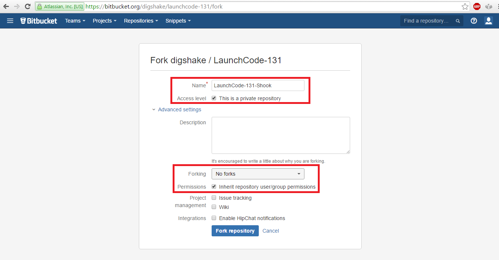
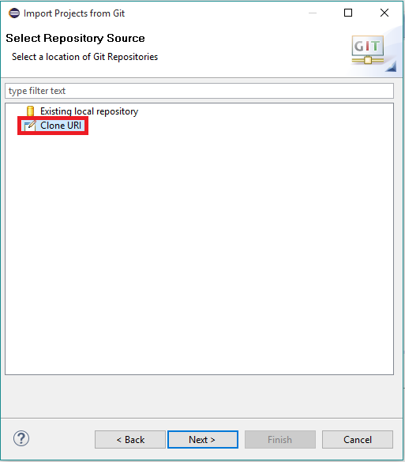
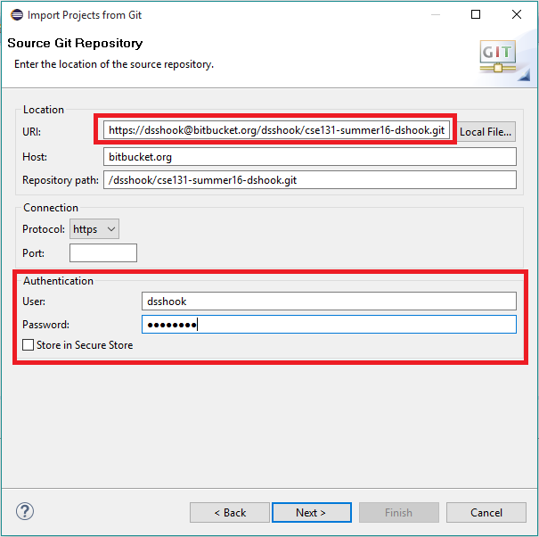
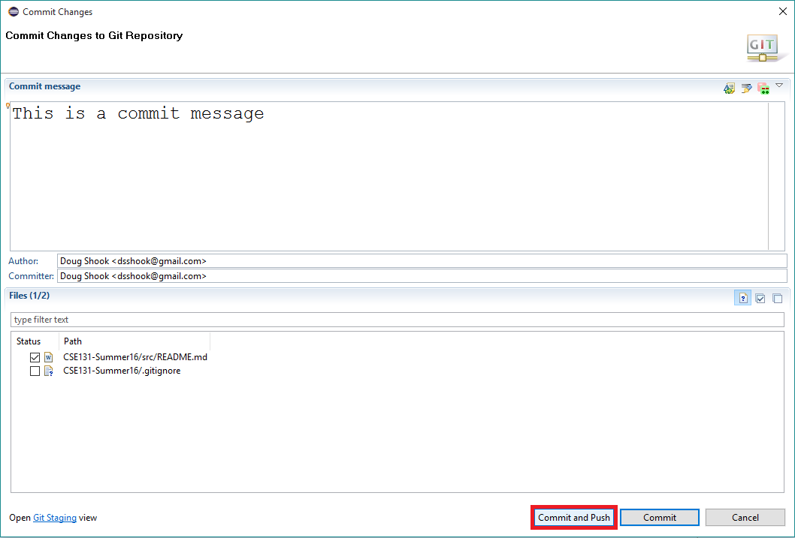
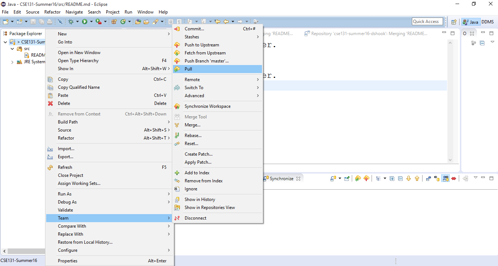

Prep 0: Module 0
- Course Introduction
- Module Introduction
- A Generation of Computation
- Thirty Years of Progress
- What is Computer Science?
- How to succeed in this course
- Review Course Policies
- Install the required programs
Course Introduction
Module Introduction
A Generation of Computation
Thirty Years of Progress
What is Computer Science?
How to succeed in this course
Review Course Policies
We meet twice a week. Mondays will be the due dates for homework assignments. We will also use Mondays to go over past exercises and/or homework assignments.
Thursdays will begin with a concept review for the current module. You will then be asked to complete that week’s studio. A studio is a short problem set that we expect you to complete in class. We do not “grade” them per se, you simply have to show up and try your best. Even if you do not complete a studio before the end of class, you will still get credit for it.
You will be expected to keep up with the prep work for each module. You should do the prep work before showing up to class on Thursdays, so that you are ready to participate in the review sessions.
If you are looking for more practice for a particulare module, you can work on the extensions. These extensions are entirely optional, but they are great practice!
Most things in this course (especially the studios) can be completed in small groups. We encourage you to form groups of 2 or 3 people to work on the exercises, assignments, and studios.
When you have completed a studio or an assignment, you must demo it to a TA or the instructor to recieve credit. The person who you demo your work to will ask you questions about your work, so be prepared! Upon successful completion of a demo, the instructor/TA will mark the studio or assignment as complete on Vocareum. You may login to Vocareum to see what studios and assignments you have completed previously.
If you get stuck in class, be sure to ask a TA or the instructor! If you get stuck on something outside of class, we have set up a message board on Piazza that you can use to ask questions.
Install the required programs
Install eclipse
Watch this video for instructions on installing Eclipse.
Access your repository
The first thing you will need to do is set up a BitBucket account. Once you have an account, search for the repository by typing “LaunchCode-131” into the search box:

Click on the LaunchCode-131 Repo. It will take you to the following page. Click the “Fork” link:
Add your last name to the name of the repository as shown (please do not use my name!). Make sure the repository is set as private, and set the forking policy to disallow forks. Make sure the box labelled “Inherit repository user/group permissions” is checked.

Once you have finished setting up your repository on BitBucket, you need to create a clone of your repository on your local machine. First, go to the BitBucket page for your repository and copy the link:
Next, open Eclipse and go into your workspace:
Go to File -> Import. Then select Git project from the list:
Next, select “Clone URI”:

Paste the link that you copied from BitBucket into the box at the top. Fill in your BitBucket login (not your WUSTL key!) at the bottom:

Keep clicking next until you see the following screen. Make sure the box next to the LaunchCode project is checked:
Once you click “Finish”, you should see the project in your workspace. It should contain folders for psets, exercises, studios, and walkthroughs.
Committing your work
Committing your work is equivalent to saving it. When you are ready to save your work, right click the project and select Team-> Commit:
Type in a descriptive commit message then push the “Commit and Push” button at the bottom. Make sure to push! If you only commit (without the push) your work will only be saved on your computer, not in the cloud. This means that other people (such as your team members) will not be able to access it.

Updating your repository
From time to time we may add files to your repository (such as new psets and exercises). If you are working with a partner, you will want to be able to see the work that they have done. To do this, you need to update your repository. This can be accomplished by right clicking the LaunchCode-131 project and selecting “Pull”:

This will get any changes that have been made to your repository. It is a good habit to run a pull before you make any changes to your repository, especially if you are working with a partner.